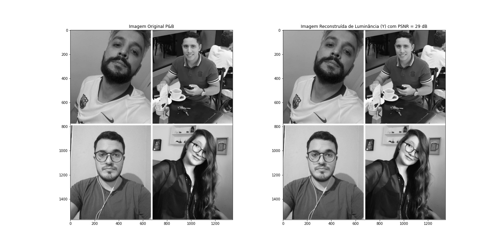
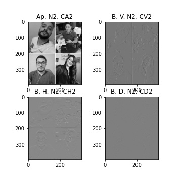
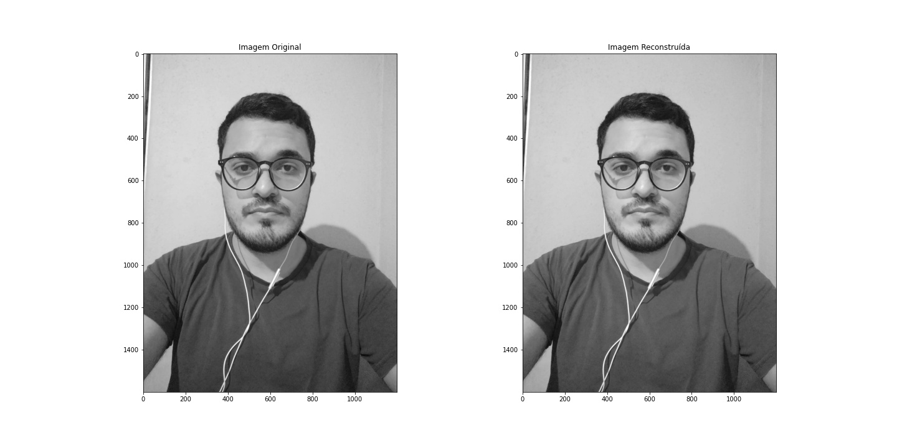
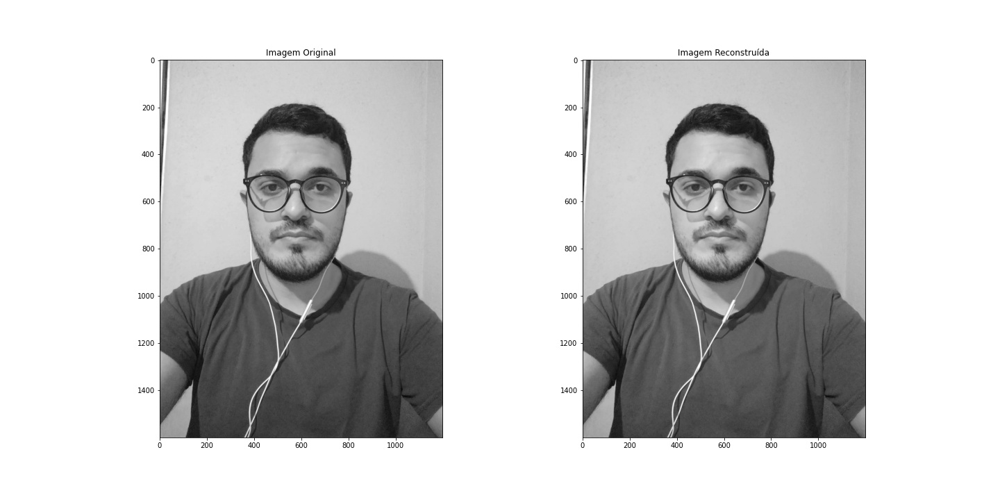

Lab5: Percepção Auditiva
Nesse laboratório iremos realizar as seguintes etapa:
Teste de audiometria: O teste de audiometria tem como finalidade guiar auditivamente a pessoa e testar os tons e a intensidade que é capaz de ouvir.
2. Testar funções de Codificação Multinível
3. Verificar a taxa de compressão só com a Componente de Aproximação
C. Codificação de Luminância (P&B) com DWT para a foto com os integrantes do grupo
filename = 'grupo'
img = mpimg.imread(f'{BASE_PATH}/{filename}.jpg')
img_gray = cv.cvtColor(img, cv.COLOR_RGB2GRAY)
coefs2 = pywt.dwt2(img_gray,'haar', mode='periodization') #1 nível de DWT
(cA, (cH, cV, cD)) = coefs2 #Separando os coeficientes
imgr = pywt.idwt2(coefs2, 'haar', mode = 'periodization') #1 nível de IDWT
plt.figure(figsize=(10,10))
plt.subplot(2,2,1)
plt.imshow(cA,'gray'); plt.title("CA - Aproximação")
plt.subplot(2,2,2)
plt.imshow(cV,'gray'); plt.title("CV - Bordas Verticais")
plt.subplot(2,2,3)
plt.imshow(cH,'gray'); plt.title("CH - Bordas Horizontais")
plt.subplot(2,2,4)
plt.imshow(cD,'gray'); plt.title("CD - Bordas Diagonais")
plt.savefig(f'{BASE_PATH}/L4_C_{filename}.jpg')
Parte C: Resultado para foto com todos os integrantes do grupo
Parte C1: Cálculo do Erro Quadrático Médio (MSE) e da Relação Sinal Ruído de Pico (PSNR)
# Calculo da MSE P&B
A, L, Camadas = img.shape
diff = img_gray - imgr
MSE_gray = np.sum(np.matmul(diff,np.transpose(diff)))/(A*L)
print("MSE_Y = {:.2e}".format(MSE_gray))
PSNR_Y = 20*np.log10(255) - 10*np.log10(MSE_gray)
print("PSNR_Luma = {:.2f} dB".format(PSNR_Y))
plt.figure(figsize=(20,10))
infograf = "Imagem Reconstruída de Luminância (Y) com PSNR = " + str(np.uint8(PSNR_Y)) + ' dB'
plt.subplot(1,2,1); plt.imshow(img_gray,'gray'); plt.title("Imagem Original P&B")
plt.subplot(1,2,2); plt.imshow(imgr,'gray'); plt.title(infograf)
plt.savefig(f'{BASE_PATH}/L4_C_{filename}.jpg')
Parte C1: Resultado para foto com todos os integrantes do grupo
Parte D: Teste das Funções de Multiresolução wavedec2() e waverec2()
C = pywt.wavedec2(img_gray,'haar', mode = 'symmetric', level=2) # Dois níveis de decomposição DWT
imgr2 = pywt.waverec2(C, 'haar', mode = 'symmetric') # Dois níveis de IDWT
# Para extrair os coeficientes de cada nível
cA2 = C[0] # Coeficientes de Aproximação nível 2
(cH1, cV1, cD1) = C[-1] # Coeficientes de Detalhes nível 1
(cH2, cV2, cD2) = C[-2] # Coeficientes de Detalhes nível 2
# Imagem Original
img_gray = cv.cvtColor(img, cv.COLOR_BGR2GRAY)
# Plot dos coeficientes do nível 2
plt.figure(figsize=(5,5))
plt.subplot(2,2,1)
plt.imshow(cA2, 'gray'); plt.title('Ap. N2: CA2')
plt.subplot(2,2,2)
plt.imshow(cV2, 'gray'); plt.title('B. V. N2: CV2')
plt.subplot(2,2,3)
plt.imshow(cH2, 'gray'); plt.title('B. H. N2: CH2')
plt.subplot(2,2,4)
plt.imshow(cD2, 'gray'); plt.title('B. D. N2: CD2')
plt.savefig(f'{BASE_PATH}/L4_D1_{filename}.jpg')
# Plot Original e Reconstrução
plt.figure(figsize=(20,10))
plt.subplot(1,2,1); plt.imshow(img_gray,'gray'); plt.title('Imagem Original')
plt.subplot(1,2,2); plt.imshow(imgr2,'gray'); plt.title('Imagem Reconstruída')
plt.savefig(f'{BASE_PATH}/L4_D2_{filename}.jpg')
Parte D: Resultado para foto com todos os integrantes do grupo
Parte E: Efetuar uma "Montagem" com wavedec2() e wavedecn()
# nível 1
CV1 = cV1.copy()
CH1 = cH1.copy()
CD1 = cD1.copy()
# nível 2
CA2 = cA2.copy()
CH2 = cH2.copy()
CV2 = cV2.copy()
CD2 = cD2.copy()
# Matriz Final Completa
CA1 = np.bmat([[CA2,CV2],[CH2,CD2]])
CC = np.bmat([[CA1,CV1],[CH1,CD1]])
plt.figure(figsize=(20,20))
plt.imshow(CC,'gray')
plt.title('Codificação de Imagem em multinível com função wavedec2()')
plt.savefig(f'{BASE_PATH}/L4_E_{filename}.jpg')
Parte E: Resultado para foto com todos os integrantes do grupo

Parte F: Reconstrução de Imagem Colorida
# Imagem Original
plt.figure(figsize=(20,20))
plt.imshow(img); plt.title("Imagem Original")
plt.savefig(f'{BASE_PATH}/L4_FOr_{filename}.jpg')
# Codificação por planos de cores
# Plano Vermelho
coefs_R = pywt.dwt2(img[:,:,0],'haar', mode='periodization') #1 nível de DWT R
(cA_R, (cH_R, cV_R, cD_R)) = coefs_R #Separando os coeficientes
cr_R = pywt.idwt2(coefs_R, 'haar', mode = 'periodization') #1 nível de IDWT R
plt.figure(figsize=(20,20))
plt.subplot(2,2,1)
plt.imshow(cA_R,'Reds_r'); plt.title("CA_Red - Aproximação")
plt.subplot(2,2,2)
plt.imshow(cV_R,'Reds_r'); plt.title("CV_Red - Bordas Verticais")
plt.subplot(2,2,3)
plt.imshow(cH_R,'Reds_r'); plt.title("CH_Red - Bordas Horizontais")
plt.subplot(2,2,4)
plt.imshow(cD_R,'Reds_r'); plt.title("CD_Red - Bordas Diagonais")
plt.savefig(f'{BASE_PATH}/L4_FR1_{filename}.jpg')
plt.figure(figsize=(20,20))
plt.imshow(cr_R, 'Reds_r'); plt.title("Imagem Reconstruída Red")
plt.savefig(f'{BASE_PATH}/L4_FR2_{filename}.jpg')
# Plano Verde
coefs_G = pywt.dwt2(img[:,:,1],'haar', mode='periodization') #1 nível de DWT G
(cA_G, (cH_G, cV_G, cD_G)) = coefs_G #Separando os coeficientes
cr_G = pywt.idwt2(coefs_G, 'haar', mode = 'periodization') #1 nível de IDWT G
plt.figure(figsize=(20,20))
plt.subplot(2,2,1)
plt.imshow(cA_G,'Greens_r'); plt.title("CA_Green - Aproximação")
plt.subplot(2,2,2)
plt.imshow(cV_G,'Greens_r'); plt.title("CV_Green - Bordas Verticais")
plt.subplot(2,2,3)
plt.imshow(cH_G,'Greens_r'); plt.title("CH_Green - Bordas Horizontais")
plt.subplot(2,2,4)
plt.imshow(cD_G,'Greens_r'); plt.title("CD_Green - Bordas Diagonais")
plt.savefig(f'{BASE_PATH}/L4_FG1_{filename}.jpg')
plt.figure(figsize=(20,20))
plt.imshow(cr_G, 'Greens_r'); plt.title("Imagem Reconstruída Green")
plt.savefig(f'{BASE_PATH}/L4_FG2_{filename}.jpg')
# Plano Azul
coefs_B = pywt.dwt2(img[:,:,2],'haar', mode='periodization') #1 nível de DWT B
(cA_B, (cH_B, cV_B, cD_B)) = coefs_B #Separando os coeficientes
cr_B = pywt.idwt2(coefs_B, 'haar', mode = 'periodization') #1 nível de IDWT B
plt.figure(figsize=(20,20))
plt.subplot(2,2,1)
plt.imshow(cA_B,'Blues_r'); plt.title("CA_Blue - Aproximação")
plt.subplot(2,2,2)
plt.imshow(cV_B,'Blues_r'); plt.title("CV_Blue - Bordas Verticais")
plt.subplot(2,2,3)
plt.imshow(cH_B,'Blues_r'); plt.title("CH_Blue - Bordas Horizontais")
plt.subplot(2,2,4)
plt.imshow(cD_B,'Blues_r'); plt.title("CD_Blue - Bordas Diagonais")
plt.savefig(f'{BASE_PATH}/L4_FB1_{filename}.jpg')
plt.figure(figsize=(20,20))
plt.imshow(cr_B, 'Blues_r'); plt.title("Imagem Reconstruída Blue")
plt.savefig(f'{BASE_PATH}/L4_FB2_{filename}.jpg')
# Reconstrução Nível 1 Colorida
A1, L1 = cA_R.shape
imgrec1 = np.zeros((A1,L1,3))
imgrec1[:,:,0] = cA_R.copy()
imgrec1[:,:,1] = cA_G.copy()
imgrec1[:,:,2] = cA_B.copy()
plt.figure(figsize=(10,10))
plt.imshow(imgrec1); plt.title("Imagem Reconstruída DWT/IDWT Nível 1")
plt.savefig(f'{BASE_PATH}/L4_Freconstr_{filename}.jpg')
Parte F: Resultado para foto com todos os integrantes do grupo
Parte G: Salvando as Aproximações e depois fazendo download dos arquivos, calcular a taxa de compressão com o original
# obtenha aproximação de NÍVEL 1 e converte para inteiro
C1 = pywt.wavedec2(img_gray,'haar', mode = 'symmetric', level=1) # Um nível de decomposição DWT
CA1_ = 255 * C1[0] / np.abs(C1[0]).max()
CA1_ = CA1_.astype(int)
# aproximação de NÍVEL 2 - ja´obtido no item (D) e converte para inteiro
CA2_ = 255 * cA2 / np.abs(cA2).max()
CA2_ = CA2_.astype(int)
# Salva no drive
cv.imwrite(f'{BASE_PATH}/{filename}_DWT_N1_Y.bmp', CA1_) # Aproximação Nível 1 só Y
cv.imwrite(f'{BASE_PATH}/{filename}_DWT_N2_Y.bmp', CA2_) # Aproximação Nível 2 só Y
Tabela comparativa
Original (grupo.jpg) grupo_DWT_N1_Y.bmp grupo_DWT_N2_Y.bmp
________________________________________________________________________
784 KB 517 KB 130 KB
100% 65,94 % 16,58 %
Parte H: Gravando o Arquivo Codificado DWT/IDWT nível 1 Colorido, calcular a taxa de compressão com o original
# Aproximação Nível 1 Colorida
# converte RGB para BGR e converte para inteiro
imgrec1_ = np.zeros((A1,L1,3))
imgrec1_[:,:,0] = imgrec1[:,:,2]
imgrec1_[:,:,1] = imgrec1[:,:,1]
imgrec1_[:,:,2] = imgrec1[:,:,0]
imgrec1_ = ( 255 * imgrec1_ / np.abs(imgrec1_).max() ).astype(int)
# Salva no drive
cv.imwrite(f'{BASE_PATH}/{filename}_DWT_N1_colorida.bmp', imgrec1_) # Gravando Aproximação Nível 1 Colorida
Tabela comparativa
Original (grupo.jpg) grp_DWT_N1_colorida.bmp
________________________________________________________________________
784 KB 1500 KB
100% 191,32 %
Parte I: Reconstrução da Imagem colorida e Cálculo da MSE de cada plano de cor e da PSNR total
# Reconstrução Colorida Original
A,L = imgr2.shape
imgrec = np.zeros((A,L,3))
imgrec[:,:,0] = cr_R.copy()
imgrec[:,:,1] = cr_G.copy()
imgrec[:,:,2] = cr_B.copy()
# Calculo do MSE colorida
dif2 = img - imgrec
MSE_R = np.sum(np.matmul(dif2[:,:,0],np.transpose(dif2[:,:,0])))/(A*L) # Erro Quadrático Médio plano R
MSE_G = np.sum(np.matmul(dif2[:,:,1],np.transpose(dif2[:,:,1])))/(A*L) # Erro Quadrático Médio plano G
MSE_B = np.sum(np.matmul(dif2[:,:,2],np.transpose(dif2[:,:,2])))/(A*L) # Erro Quadrático Médio plano B
print("MSE_Red= {:.2e}".format(MSE_R), " MSE_Green= {:.2e}".format(MSE_G), " MSE_Blue= {:.2e}".format(MSE_B))
# Cálculo da SNR de pico colorida (PSNR), 3 camadas R, G e B
PSNR = 20*np.log10(255) - 10*np.log10(MSE_R + MSE_G + MSE_B)
print("PSNR total = {:.2f} dB".format(PSNR))
plt.figure(figsize=(20,20))
infograf2 = "Imagem Reconstruída com PSNR total = " + str(np.uint8(PSNR)) + ' dB'
plt.imshow(imgrec); plt.title(infograf2)
plt.savefig(f'{BASE_PATH}/L4_I_{filename}.jpg')
Parte I: Resultado para foto com todos os integrantes do grupo
Parte J: Relatório
1. Acrescentar também a foto-montagem do grupo todo, mas codificar esta foto-montagem em um nível com DWT também as componentes Cr e Cb (efetuamos aqui apenas para a componente Y)
Separando as camadas...
img = mpimg.imread(f'{BASE_PATH}/grupo.jpg')
J_img = cv.imread(f'{BASE_PATH}/grupo.jpg')
J_ycrcb = cv.cvtColor(J_img, cv.COLOR_BGR2YCrCb)
img_ycrcb = cv.cvtColor(J_img, cv.COLOR_RGB2YCrCb)
print(img_ycrcb.shape)
y1, cr, cb = cv.split(img_ycrcb)
Para componentes Cb
def dwt_and_plot_Cb(cb, J_ycrcb, img, filename):
#DWT e plot para Cb
coefs2 = pywt.dwt2(cb,'haar', mode='periodization') #1 nível de DWT
(cA, (cH, cV, cD)) = coefs2 #Separando os coeficientes
imgr = pywt.idwt2(coefs2, 'haar', mode = 'periodization') #1 nível de IDWT
#Prints - Cb
plt.figure(figsize=(7,10))
plt.subplot(2,2,1)
plt.imshow(cA, 'GnBu_r'); plt.title("CA - Aproximação (Cb)")
plt.subplot(2,2,2)
plt.imshow(cV, 'GnBu_r'); plt.title("CV - Bordas Verticais (Cb)")
plt.subplot(2,2,3)
plt.imshow(cH, 'GnBu_r'); plt.title("CH - Bordas Horizontais (Cb)")
plt.subplot(2,2,4)
plt.imshow(cD, 'GnBu_r'); plt.title("CD - Bordas Diagonais (Cb)")
A, L, Camadas = img.shape
dif = cb - imgr
print(f'{cb.shape}, {imgr.shape}')
MSE_cb = np.sum(np.matmul(dif,np.transpose(dif)))/(A*L)
print("MSE_cb = {:.2e}".format(MSE_cb))
PSNR_cb = 20*np.log10(255) - 10*np.log10(MSE_cb)
print("PSNR_cb = {:.2f} dB".format(PSNR_cb))
plt.figure(figsize=(10,20))
resultado = "Imagem Reconstruída de cb com PSNR = " + str(np.uint8(PSNR_cb)) + ' dB'
plt.subplot(1,2,1); plt.imshow(cr,'gray'); plt.title("Imagem Original Cr")
plt.subplot(1,2,2); plt.imshow(imgr,'gray'); plt.title(resultado)
cv.imwrite(f'{BASE_PATH}/{filename}_DWT_Cb.bmp', cb)
y1, cr1, cb1 = cv.split(J_ycrcb)
imageCR = J_ycrcb.copy()
imageCR[:, :, 0] = 0
imageCR[:, :, 2] = 0
Cr = cv.cvtColor(imageCR, cv.COLOR_YCrCb2RGB)
imageCB = J_ycrcb.copy()
imageCB[:, :, 0] = 0
imageCB[:, :, 1] = 0
Cb = cv.cvtColor(imageCB, cv.COLOR_YCrCb2RGB)
cb_C = pywt.wavedec2(Cb,'haar', mode = 'symmetric', level=2) # Dois níveis de decomposição DWT
cb_imgr2 = pywt.waverec2(cb_C, 'haar', mode = 'symmetric') # Dois níveis de IDWT
# Para extrair os coeficientes de cada nível
cb_cA2 = cb_C[0] # Coeficientes de Aproximação nível 2
(cb_cH1, cb_cV1, cb_cD1) = cb_C[-1] # Coeficientes de Detalhes nível 1
(cb_cH2, cb_cV2, cb_cD2) = cb_C[-2] # Coeficientes de Detalhes nível 2
# Plot Original e Reconstrução
plt.figure(figsize=(10,20))
plt.subplot(1,2,1); plt.imshow(Cb,'gray'); plt.title('Imagem Original')
plt.subplot(1,2,2); plt.imshow(cb_imgr2,'gray'); plt.title('Imagem Reconstruída')
plt.savefig(f'{BASE_PATH}/L4_D2_cb_{filename}.jpg')
# obtenha aproximação de NÍVEL 1 e converte para inteiro
cb_C1 = pywt.wavedec2(Cb,'haar', mode = 'symmetric', level=1) # Um nível de decomposição DWT
cb_CA1_ = 255 * cb_C1[0] / np.abs(cb_C1[0]).max()
cb_CA1_ = cb_CA1_.astype(int)
# aproximação de NÍVEL 2 - ja´obtido no item (D) e converte para inteiro
cb_CA2_ = 255 * cb_cA2 / np.abs(cb_cA2).max()
cb_CA2_ = cb_CA2_.astype(int)
# Salva no drive
#print(cb_CA1_.shape)
#v.imwrite(f'{BASE_PATH}/{filename}_DWT_Cb_2.bmp', cb_CA1_) # Aproximação Nível 1 só Cb
dwt_and_plot_Cb(cb, J_ycrcb, img, 'grupo')
Parte J (Cb): Resultado para foto com todos os integrantes do grupo
Agora para componentes Cr
def dwt_and_plot_Cr(cb, J_ycrcb, img, filename):
coefs2 = pywt.dwt2(cr,'haar', mode='periodization') #1 nível de DWT
(cA, (cH, cV, cD)) = coefs2 #Separando os coeficientes
imgr = pywt.idwt2(coefs2, 'haar', mode = 'periodization') #1 nível de IDWT
#Prints - Cr
plt.figure(figsize=(7,10))
plt.subplot(2,2,1)
plt.imshow(cA); plt.title("CA - Aproximação (Cr)")
plt.subplot(2,2,2)
plt.imshow(cV); plt.title("CV - Bordas Verticais (Cr)")
plt.subplot(2,2,3)
plt.imshow(cH); plt.title("CH - Bordas Horizontais (Cr)")
plt.subplot(2,2,4)
plt.imshow(cD); plt.title("CD - Bordas Diagonais (Cr)")
A, L, Camadas = img.shape
dif = cr - imgr
print(f'{cr.shape}, {imgr.shape}')
MSE_cr = np.sum(np.matmul(dif,np.transpose(dif)))/(A*L)
print("MSE_cb = {:.2e}".format(MSE_cr))
PSNR_cr = 20*np.log10(255) - 10*np.log10(MSE_cr)
print("PSNR_cb = {:.2f} dB".format(PSNR_cr))
plt.figure(figsize=(10,20))
resultado = "Imagem Reconstruída de cr com PSNR = " + str(np.uint8(PSNR_cr)) + ' dB'
plt.subplot(1,2,1); plt.imshow(cr,'gray'); plt.title("Imagem Original Cr")
plt.subplot(1,2,2); plt.imshow(imgr,'gray'); plt.title(resultado)
cv.imwrite(f'{BASE_PATH}/{filename}_DWT_CR.bmp', cr)
imageCR = J_ycrcb.copy()
imageCR[:, :, 0] = 0
imageCR[:, :, 2] = 0
Cr = cv.cvtColor(imageCR, cv.COLOR_YCrCb2RGB)
cr_C = pywt.wavedec2(Cr,'haar', mode = 'symmetric', level=2) # Dois níveis de decomposição DWT
cr_imgr2 = pywt.waverec2(cr_C, 'haar', mode = 'symmetric') # Dois níveis de IDWT
cr_cA2 = cr_C[0] # Coeficientes de Aproximação nível 2
(cr_cH1, cr_cV1, cr_cD1) = cr_C[-1] # Coeficientes de Detalhes nível 1
(cr_cH2, cr_cV2, cr_cD2) = cr_C[-2] # Coeficientes de Detalhes nível 2
plt.figure(figsize=(10,20))
plt.subplot(1,2,1); plt.imshow(Cr,'gray'); plt.title('Imagem Original')
plt.subplot(1,2,2); plt.imshow(cr_imgr2,'gray'); plt.title('Imagem Reconstruída')
plt.savefig(f'{BASE_PATH}/L4_D2_cr_{filename}.jpg')
#Para Cr
# obtenha aproximação de NÍVEL 1 e converte para inteiro
cr_C1 = pywt.wavedec2(Cr,'haar', mode = 'symmetric', level=1) # Um nível de decomposição DWT
cr_CA1_ = 255 * cr_C1[0] / np.abs(cr_C1[0]).max()
cr_CA1_ = cr_CA1_.astype(int)
# aproximação de NÍVEL 2 - ja´obtido no item (D) e converte para inteiro
cr_CA2_ = 255 * cr_cA2 / np.abs(cr_cA2).max()
cr_CA2_ = cr_CA2_.astype(int)
# Salva no drive
#print(cr_CA1_.shape)
#v.imwrite(f'{BASE_PATH}/{filename}_DWT_Cr_2.bmp', cr_CA1_) # Aproximação Nível 1 só Cr
dwt_and_plot_Cr(cr, J_ycrcb, img, 'grupo')
Parte J (Cr): Resultado para foto com todos os integrantes do grupo

Repetindo tudo de novo para cada pessoa do grupo...
Andre
Eric
 

Gabriel
Jessica